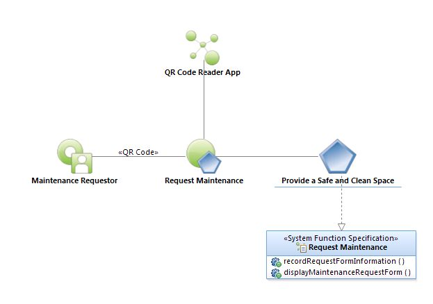
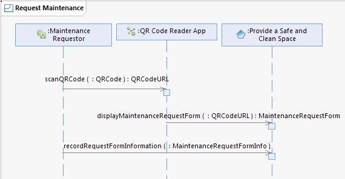
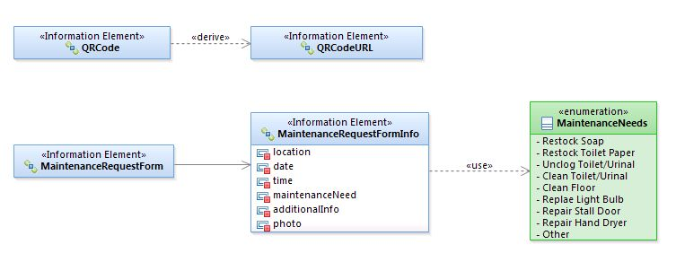

|
Request Maintenance Use Case Specification
Select to
enlarge...

Request Maintenance Use
Case Model
|
Scope: The
Maintenance Requestor (any person requesting
maintenance: COA employee or citizen) observes a need for maintenance
in a
Austin Convention Center facility and uses their mobile device to scan
a Quick
Response Code (QR Code). When scanned, the QR Code presents the
Maintenance
Requestor with the Maintenance Request Form. The QR Code is
location-specific
and automatically enters the Location, Date and Time into the Form. The
Maintenance Requestor next chooses a Maintenance Need from a list of
pre-defined values. If the Maintenance Requestor has chosen 'Other'
from the
pre-defined value list of Maintenance Needs or would otherwise like to
input
additional information, they type information into the Additional Info
field.
If the Maintenance Requestor wishes to include a photo of the area of
Maintenance Need, they may tap a button to use their mobile device to
take the
photo. The process of attaching a photo follows normal convention,
namely a
photo is taken and the user is able to use the photo or discard it and
take
another photo, repeating the process until a suitable photo is chosen.
When
ready, the Maintenance Requestor taps a Submit button to submit the
Maintenance
Request Form, saving the information.
Select to
enlarge...

Request Maintenance
Sequence Diagram |
Table of
Interface Descriptions
| Type/Interface |
Description |
QR Code Reader App/
scanQRCode
|
The Maintenance Requestor uses the QR Code Reader
application on their mobile device to scan/read the Maintenance Request QR
Code. The QR Code Reader application returns a location-specific QR Code
Uniform Resource Locator (QR Code URL).
|
Provide a Safe and Clean Space/
displayMaintenanceRequestForm |
The QR Code Reader uses the system to display a new
Maintenance Request Form, by supplying the location-specific QR Code URL. The
new Maintenance Request Form appears and is auto-populated with the Location,
Date and Time. The Maintenance Requestor next chooses a Maintenance Need from a
list of pre-defined values (Restock Soap, Restock Toilet Paper, Unclog
Toilet/Urinal, Clean Toilet/Urinal, Clean Mirror, Clean Floor, Replace Light
Bulb, Repair Stall Door, Repair Hand Dryer, Other.) If the Maintenance
Requestor has chosen 'Other' from the pre-defined value list of Maintenance
Needs or would otherwise like to input additional information, they type
information into the Additional Info field. If the Maintenance Requestor wishes
to include a photo of the area of Maintenance Need, they may tap the Include
Photo button and use their mobile device to take the photo. The process of
attaching a photo follows normal convention, namely a photo is taken and the
user is able to use the photo or discard it and take another photo, repeating the
process until a suitable photo is chosen.
|
Provide a Safe and Clean Space/
recordRequestFormInformation
|
The Maintenance Requestor taps a Submit button to submit the
Maintenance Request Form, storing the Maintenance Request Info. Every
five minutes the ACCD Maintenance Manager application sends a web service query
to retrieve all Maintenance Request Forms that have been submitted over the
past five minute. The returned value is parsed and stored in the ACCD
Maintenance Manager system as a new Maintenance Request, to be provisioned the
same as an internal Maintenance Request Form.
|
Request Maintenance Logical Data Model
Select to
enlarge...

|
{kind=link}
{kind=link}
{kind=link}
{kind=link}
{kind=link}